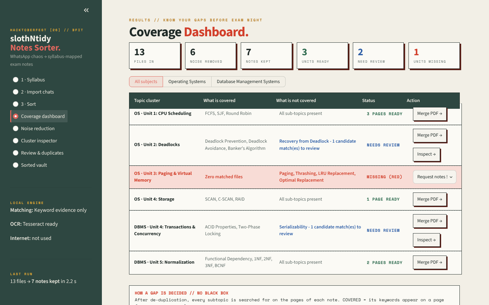
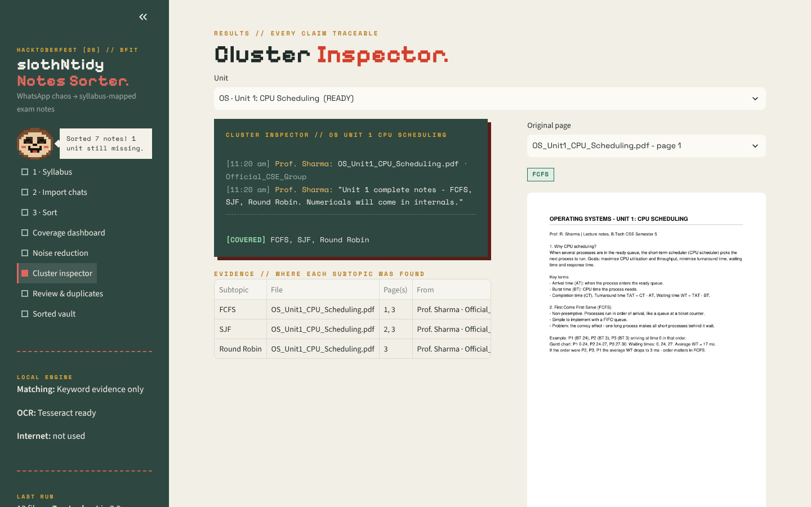

Notes from all your WhatsApp class groups, sorted by syllabus unit in one click. Duplicates and circulars removed, and the topics nobody has shared yet flagged in red, before exam night.
Download for Windows Mac / LinuxEnter your units once. Every PDF and photo of notes lands in the right unit folder with a clean name.
Fee circulars, notices, re-shared copies and the same page photographed twice are removed, with a reason for each. Nothing is deleted.
Every subtopic is ticked only when it appears on an actual page, so you see what is missing and can ask your class in time.


Install-slothNtidy.bat. If a blue box says "Windows protected your PC", click More info → Run anyway. Wait 10–15 minutes while it downloads the app, the AI model and the OCR reader. Click Yes if Windows asks permission.If the installer says Python is missing, it opens the Python download page: install it, tick "Add python.exe to PATH", and run the installer again.
Mac needs Homebrew for the OCR reader (brew install tesseract); the installer tells you if it is missing.
Class chats contain names and phone numbers, so slothNtidy runs entirely on your own computer. The AI model (MiniLM) and the OCR reader (Tesseract) are open source and run locally. No account, no cloud, no API keys.
It is a student project: neat handwriting reads well, messy handwriting may land in "Needs review" instead of being guessed. Coverage means covered in the notes you received, not a guarantee for the exam.